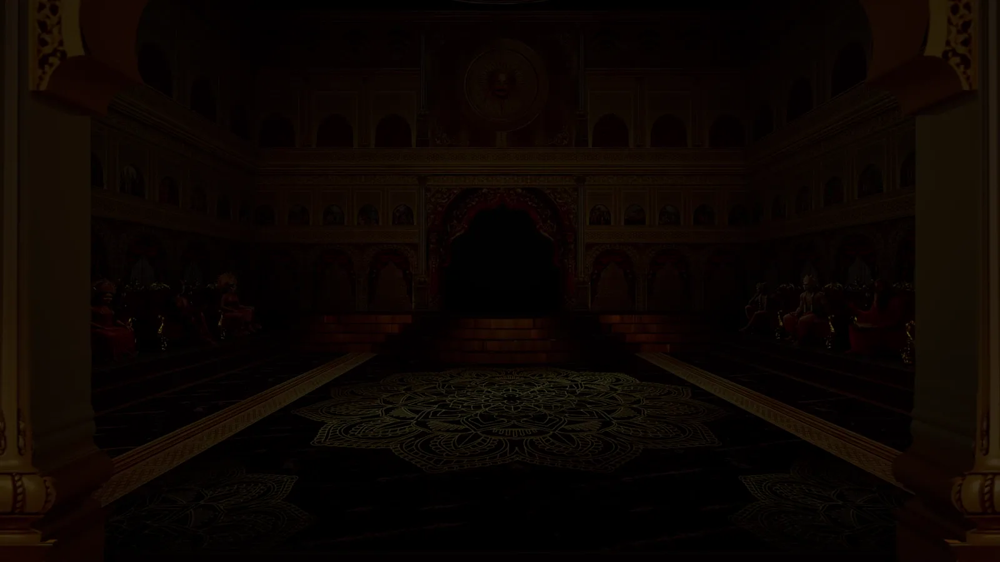

The building is the screen.
Case-study text set in the editorial style: Fraunces 300 at optical size 36, 11 pt on 1.6, measure 60–72 characters, a serif pull quote in italic. Copy from the Ram Katha Show case study on sanzeed.com.
The brief
A night show for Ayodhya that tells the Ram Katha without a stage or actors — the audience is seated in front of a great hall, and the story has to come out of the architecture itself.
The idea
Every dome, arch and column of the hall was mapped and painted with light, so the story seems to rise from the stone. Scenes move from the central shrine outwards along the galleries; the gilded ceiling becomes sky, then forest, then fire.
Visitors sit in the dark and watch a building they know by day become the story by night.
What visitors do · Ram Katha ShowThe walk
Projection, sound and timing were composed as one score: the beats of the narration cue the light, and the architecture's own rhythm (arch after arch) sets the pace of the scenes.
